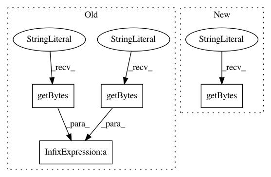

e45fef601195a9cb850e29703015d2a062aa9ea9,tests/syft/core/common/object_test.py,,test_object_with_id_binary_deserialization,#,190
Before Change
def test_object_with_id_binary_deserialization():
Test that binary ObjectWithID deserialization works as expected
blob = (
b"{\n "objType": "syft.core.common.object.ObjectWithID",\n "id""
+ b": {\n "objType": "syft.core.common.uid.UID","
+ b"\n "value": "+xuwZ1u3TEm+zucAqwoVFA=="\n }\n}"
)
obj = sy.deserialize(blob=blob, from_binary=True)
assert obj == ObjectWithID(
id=UID(value=uuid.UUID(int=333779996850170035686993356951732753684))
)
After Change
def test_object_with_id_binary_deserialization():
Test that binary ObjectWithID deserialization works as expected
blob = b"\x12\x12\x12\x10\xfb\x1b\xb0g[\xb7LI\xbe\xce\xe7\x00\xab\n\x15\x14"
obj = sy.deserialize(
blob=blob, from_binary=True, schema_type=ObjectWithID.get_protobuf_schema()
)
assert obj == ObjectWithID(
In pattern: SUPERPATTERN
Frequency: 4
Non-data size: 4
Instances
Project Name: OpenMined/PySyft
Commit Name: e45fef601195a9cb850e29703015d2a062aa9ea9
Time: 2020-08-05
Author: tudorcebere@gmail.com
File Name: tests/syft/core/common/object_test.py
Class Name:
Method Name: test_object_with_id_binary_deserialization
Project Name: OpenMined/PySyft
Commit Name: 288c7f3f846f93988fd454b86f5b4ef04229ad02
Time: 2020-08-03
Author: andrew@openmined.org
File Name: tests/syft/core/common/object_test.py
Class Name:
Method Name: test_object_with_id_binary_deserialization
Project Name: OpenMined/PySyft
Commit Name: 288c7f3f846f93988fd454b86f5b4ef04229ad02
Time: 2020-08-03
Author: andrew@openmined.org
File Name: tests/syft/core/common/object_test.py
Class Name:
Method Name: test_object_with_id_binary_serialization
Project Name: OpenMined/PySyft
Commit Name: e45fef601195a9cb850e29703015d2a062aa9ea9
Time: 2020-08-05
Author: tudorcebere@gmail.com
File Name: tests/syft/core/common/object_test.py
Class Name:
Method Name: test_object_with_id_binary_serialization